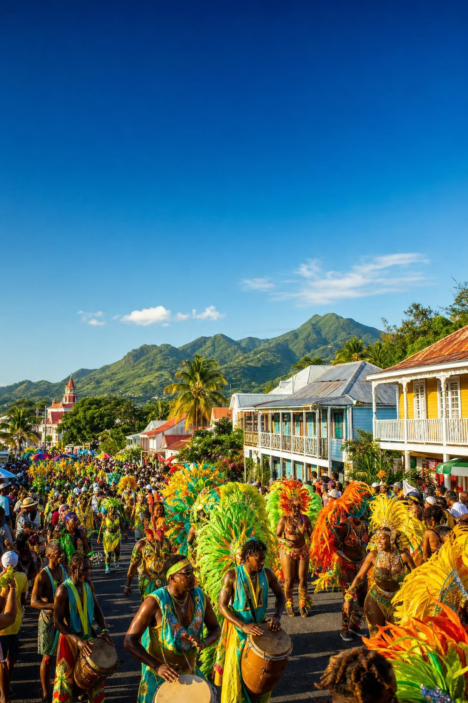
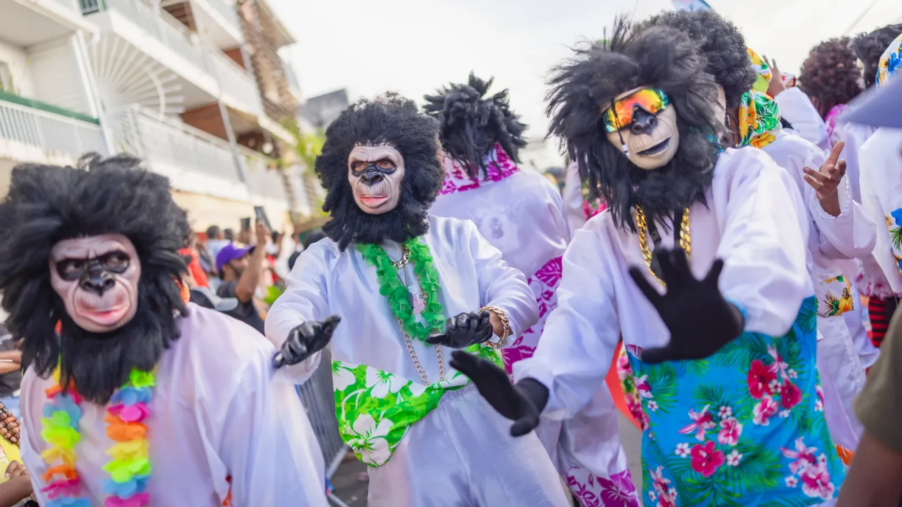
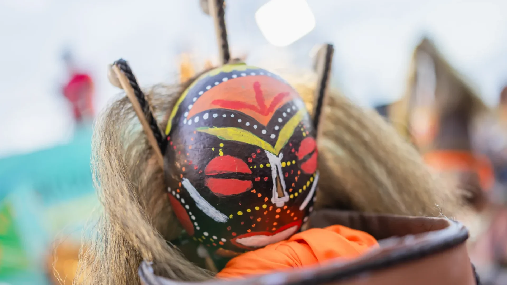
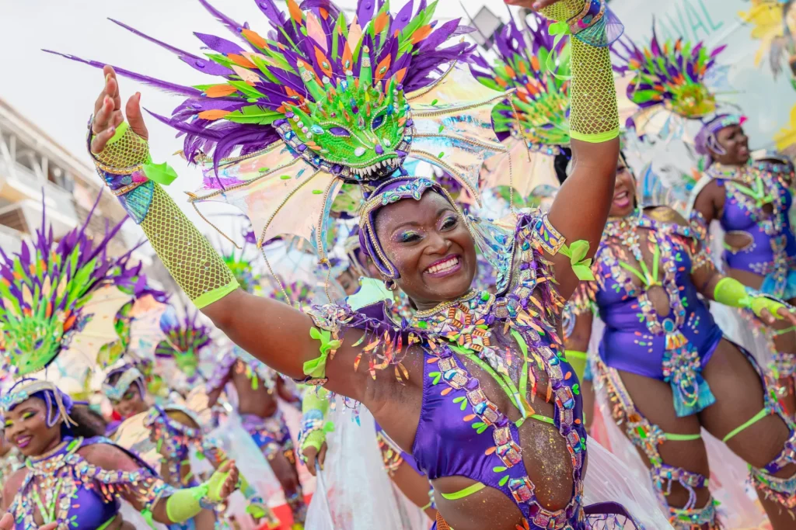
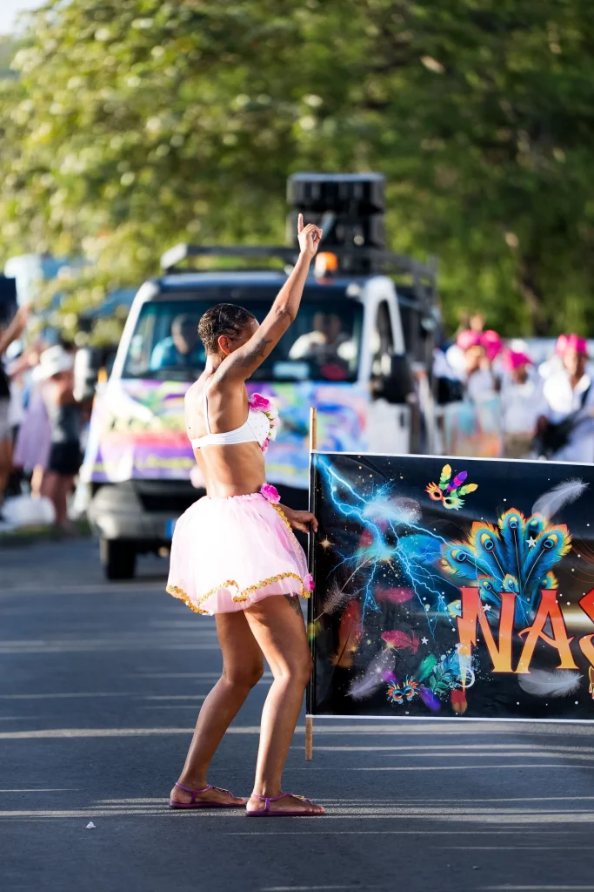
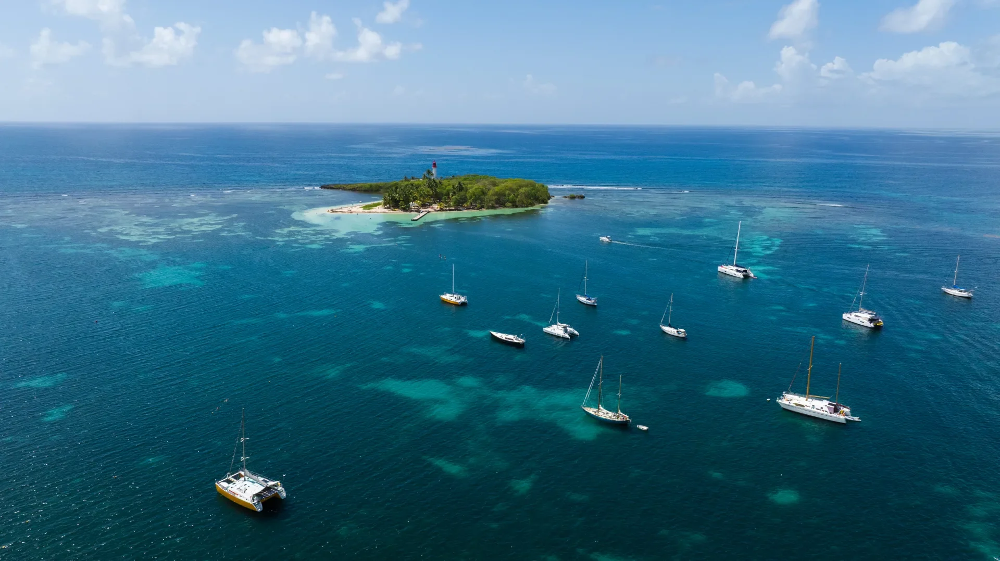

Du 3 janvier au 10 février 2027
Le carnaval
des Îles de Guadeloupe
Tambours, plumes et paillettes : plus de 150 ans de tradition envahissent les rues de l'archipel chaque dimanche.
Une fête
pas comme
les autres
Né de la rencontre entre fêtes européennes et rythmes africains, le carnaval fait défiler près de 20 000 carnavaliers : groupes à po, à mas, à caisses claires ou à synthé. Chacun a ses tambours, ses costumes… et sa satire.
Pendant cinq semaines, chaque commune vit au rythme des répétitions, des concours de costumes et des bals populaires qui durent jusqu'au bout de la nuit. Ici, le carnaval se vit dans la rue, gratuitement, au milieu des carnavaliers.

de fête
de carnaval
au Mardi Gras
aux défilés
Sources : CTIG ; presse locale (Mardi Gras 2025, Basse-Terre) ; revue Ethnologies, 2012.
Notre histoire
Plus de 150 ans de liberté
Introduit il y a plus de 150 ans, le carnaval guadeloupéen mêle les fêtes catholiques venues d'Europe et les rites africains apportés par les populations réduites en esclavage. Très vite, il devient un espace d'expression libre : on y rit des puissants, on y commente l'actualité, on y affirme une identité créole.
Le Mas Vyé Fò compte parmi les plus anciennes manifestations de l'archipel. Et chaque saison se termine de la même façon : Vaval, roi du carnaval, personnage géant inspiré de l'actualité, est brûlé le mercredi des Cendres sous les fausses larmes de la foule, vêtue de noir et blanc.
« Vaval pa kité nou ! »« Vaval, ne nous quitte pas ! » — le chant d'adieu en créole

Les groupes
Quatre familles, quatre sons
Chaque groupe crée ses costumes, sa musique et sa chorégraphie. Avant les grands jours, apprenez à les reconnaître… à l'oreille.

Les racinesGroupes à po
Les plus traditionnels : tambours en peau de cabri, ti-bois et chants créoles improvisés, costumes en toile de jute ou en tissus recyclés.

La satireGroupes à mas
Masques, chorégraphies et performances souvent satiriques : l'expressivité avant tout, pour bousculer l'ordre établi.

La cadenceCaisses claires
Percussions structurées, prestations millimétrées et costumes sophistiqués autour d'un thème choisi chaque année.

Le son urbainGroupes à synthé
Claviers, instruments électrifiés et bandes-son : la touche moderne qui fait danser les plus jeunes.

Le temps fort · 7 → 10 février 2027
Les 4 jours gras
Point d'orgue de la saison, les jours gras réunissent les plus grands défilés de l'année. Conseil : arrivez tôt, les meilleures places le long des parcours partent vite.
- Dim.07Dimanche GrasGrande parade en compétitionPointe-à-Pitre
- Lun.08Lundi GrasParade de nuit, mariages burlesquesBasse-Terre
St-François - Mar.09Mardi GrasLa plus grande parade de l'annéeBasse-Terre
- Mer.10Mercredi des CendresEn noir et blanc, Vaval part en fuméeTout l'archipel
Toute la saison,
chaque dimanche
Pas besoin d'attendre février : de Pointe-à-Pitre à Basse-Terre, des Abymes au Gosier, de Baie-Mahault à Saint-François, les communes défilent tour à tour.
- Élection de la ReineStrass, plumes et couronne : la soirée glamour de la saison.
- Lévé PyjamaLe défilé du petit matin… en pyjama, évidemment.
- Mariage burlesqueUne noce parodique où les rôles s'inversent.
- Défilés d'enfantsChorégraphies et costumes préparés à l'école ou en association.

Vivez-le de l'intérieur
Le carnaval ne se regarde pas seulement depuis le trottoir. Selon les périodes et les groupes, vous pouvez rencontrer les carnavaliers, assister aux répétitions, participer à un atelier de percussions… et parfois défiler à leurs côtés.
Le costume n'est pas obligatoire, mais paillettes, maquillage et accessoires sont vivement recommandés.

Entre deux
parades
La saison sèche bat son plein : 28 °C dans l'air, 26 °C dans l'eau et cinq îles à explorer, de l'îlet du Gosier à Marie-Galante.
Le matin, les plages de sable blanc de Grande-Terre ; l'après-midi, la forêt tropicale et les cascades de Basse-Terre. Et pour souffler après les jours gras, cap sur Les Saintes, Marie-Galante ou La Désirade.
Infos pratiques
Préparer son voyage
de vol direct entre Paris et Pointe-à-Pitre.
avec Paris en février : à 14 h en Guadeloupe, il est 19 h à Paris.
en journée, en pleine saison sèche. Chapeau, crème solaire et eau indispensables.
L'euro et une carte d'identité valide suffisent aux citoyens européens.
Février est en haute saison : vols, voitures et hébergements partent vite.
L'appli officielle : défilés, plages et météo, jour par jour.

Partagez vos plus belles photos avec #IlesDeGuadeloupe : les meilleures seront publiées sur nos réseaux.
Préparez votre séjour